These have results per 1-second interval for: insert rate (IPS), max insert reponse time, delete rate (DPS), max delete response time, query rate (QPS) and max query response time.
The results are from 1 client while the test may have N clients where N > 1.
Deletes might not have been enabled for this benchmark step, in which case those graphs will show zero values.
The test is run with a rate limit for the number of inserts/s. In some cases the DBMS is unable to sustain that rate. When a DBMS can sustain that rate IPS will be a horizontal line.
Contents
- fbmy5635_rel_221222.cza1_c24r64: IPS, max insert response time, DPS, max delete response time, QPS and max query response time
- fbmy8028_rel_221222.cza1_c24r64: IPS, max insert response time, DPS, max delete response time, QPS and max query response time
- fbmy8028_rel_221222.cza1ps0_c24r64: IPS, max insert response time, DPS, max delete response time, QPS and max query response time
- fbmy8032_rel_221222.cza1_c24r64: IPS, max insert response time, DPS, max delete response time, QPS and max query response time
- fbmy8032_rel_221222.cza1ps0_c24r64: IPS, max insert response time, DPS, max delete response time, QPS and max query response time
fbmy5635_rel_221222.cza1_c24r64: IPS
fbmy5635_rel_221222.cza1_c24r64
fbmy5635_rel_221222.cza1_c24r64: max insert response time
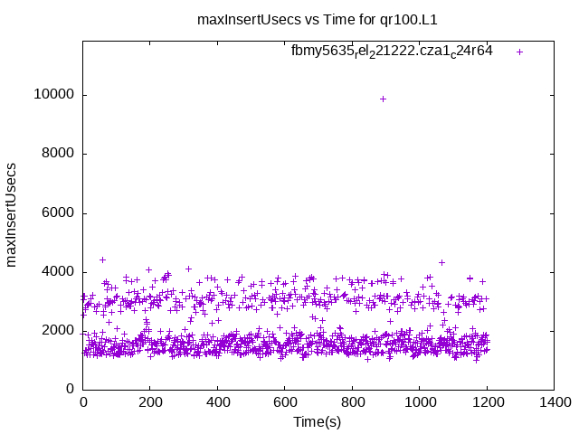fbmy5635_rel_221222.cza1_c24r64
fbmy5635_rel_221222.cza1_c24r64: DPS
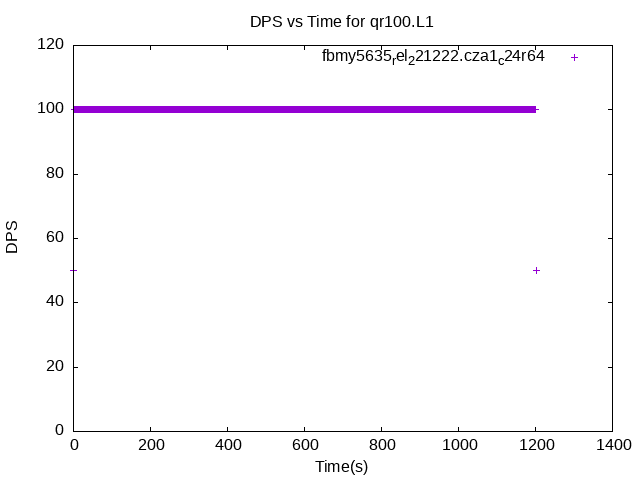fbmy5635_rel_221222.cza1_c24r64
fbmy5635_rel_221222.cza1_c24r64: max delete response time
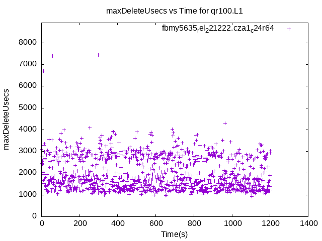fbmy5635_rel_221222.cza1_c24r64
fbmy5635_rel_221222.cza1_c24r64: QPS
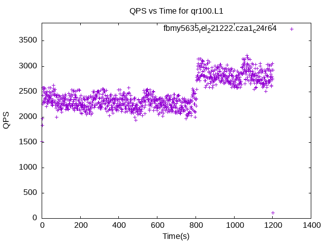fbmy5635_rel_221222.cza1_c24r64
fbmy5635_rel_221222.cza1_c24r64: max query response time
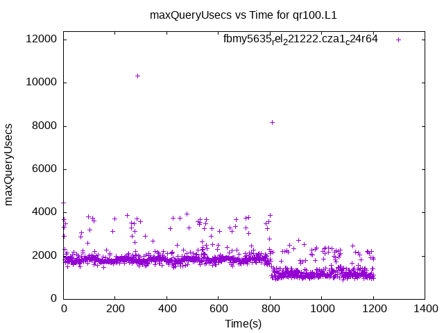fbmy5635_rel_221222.cza1_c24r64
fbmy8028_rel_221222.cza1_c24r64: IPS
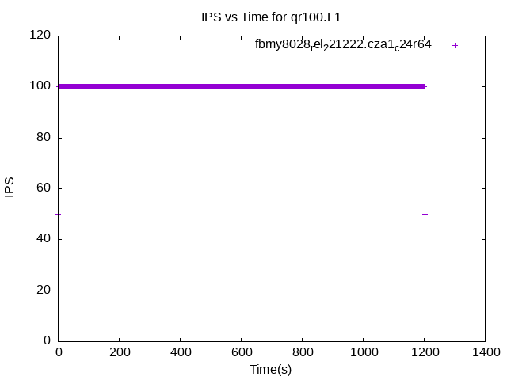fbmy8028_rel_221222.cza1_c24r64
fbmy8028_rel_221222.cza1_c24r64: max insert response time
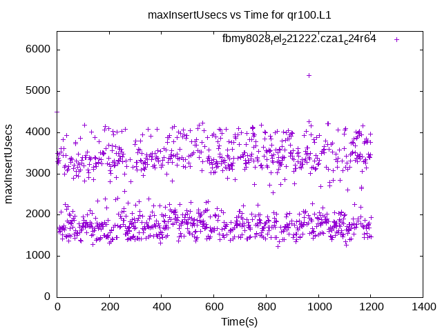fbmy8028_rel_221222.cza1_c24r64
fbmy8028_rel_221222.cza1_c24r64: DPS
fbmy8028_rel_221222.cza1_c24r64
fbmy8028_rel_221222.cza1_c24r64: max delete response time
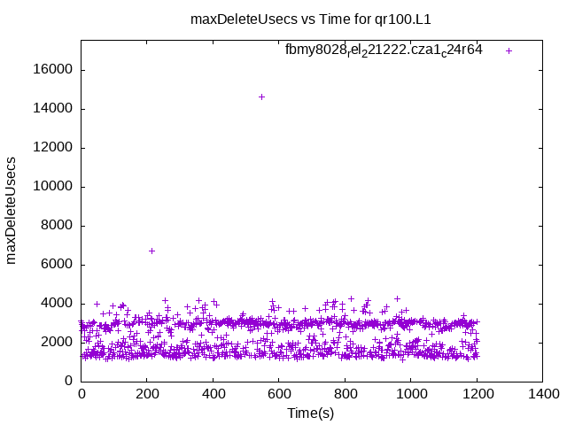fbmy8028_rel_221222.cza1_c24r64
fbmy8028_rel_221222.cza1_c24r64: QPS
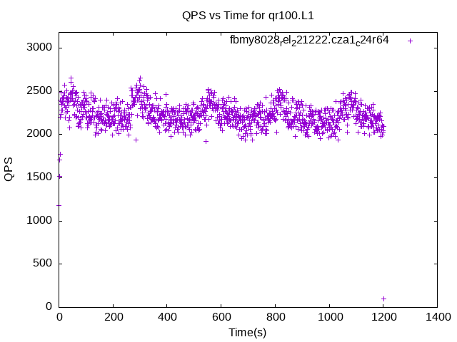fbmy8028_rel_221222.cza1_c24r64
fbmy8028_rel_221222.cza1_c24r64: max query response time
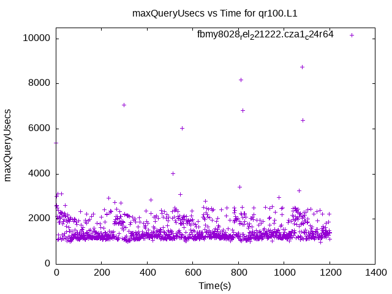fbmy8028_rel_221222.cza1_c24r64
fbmy8028_rel_221222.cza1ps0_c24r64: IPS
 fbmy8028_rel_221222.cza1ps0_c24r64
fbmy8028_rel_221222.cza1ps0_c24r64
fbmy8028_rel_221222.cza1ps0_c24r64: max insert response time
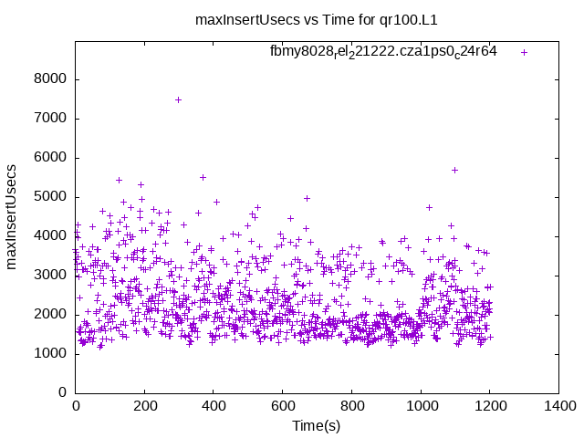fbmy8028_rel_221222.cza1ps0_c24r64
fbmy8028_rel_221222.cza1ps0_c24r64: DPS
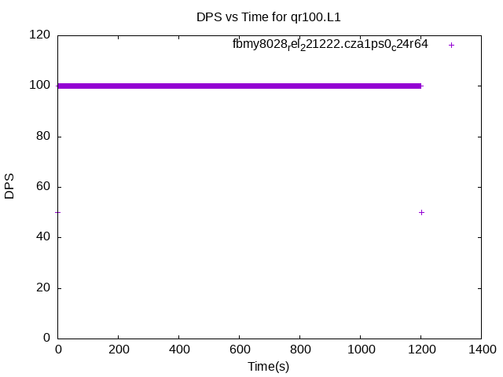fbmy8028_rel_221222.cza1ps0_c24r64
fbmy8028_rel_221222.cza1ps0_c24r64: max delete response time
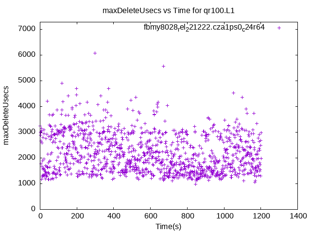fbmy8028_rel_221222.cza1ps0_c24r64
fbmy8028_rel_221222.cza1ps0_c24r64: QPS
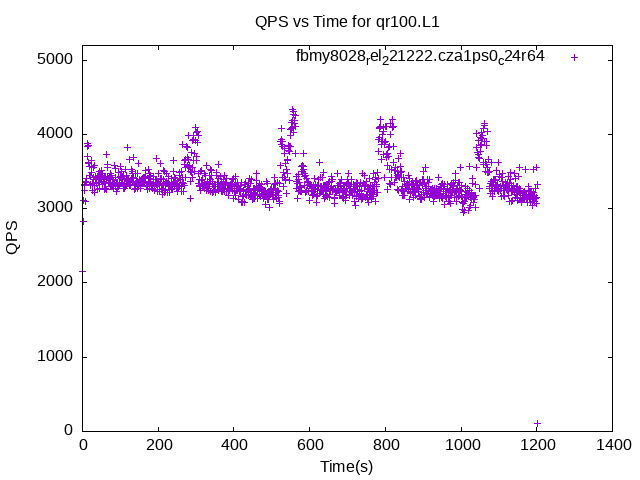fbmy8028_rel_221222.cza1ps0_c24r64
fbmy8028_rel_221222.cza1ps0_c24r64: max query response time
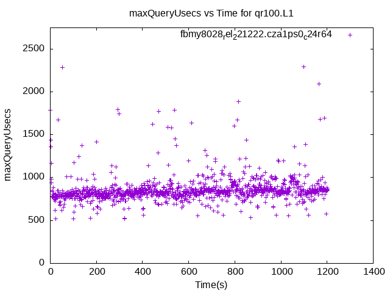fbmy8028_rel_221222.cza1ps0_c24r64
fbmy8032_rel_221222.cza1_c24r64: IPS
fbmy8032_rel_221222.cza1_c24r64
fbmy8032_rel_221222.cza1_c24r64: max insert response time
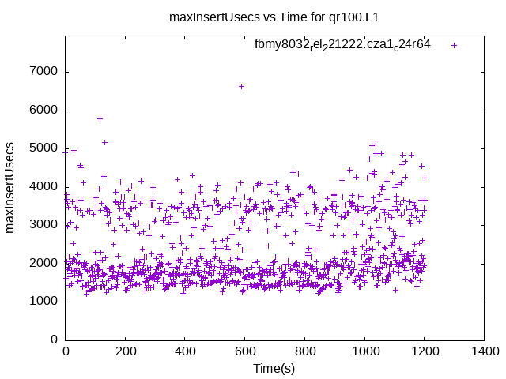fbmy8032_rel_221222.cza1_c24r64
fbmy8032_rel_221222.cza1_c24r64: DPS
fbmy8032_rel_221222.cza1_c24r64
fbmy8032_rel_221222.cza1_c24r64: max delete response time
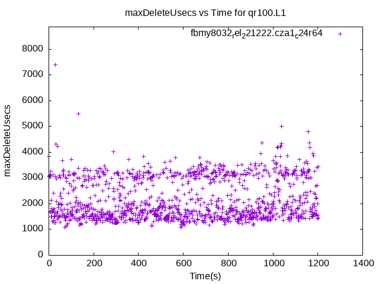fbmy8032_rel_221222.cza1_c24r64
fbmy8032_rel_221222.cza1_c24r64: QPS
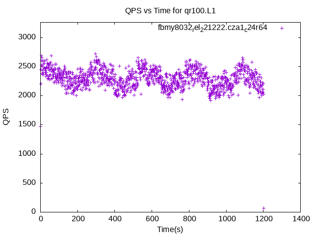fbmy8032_rel_221222.cza1_c24r64
fbmy8032_rel_221222.cza1_c24r64: max query response time
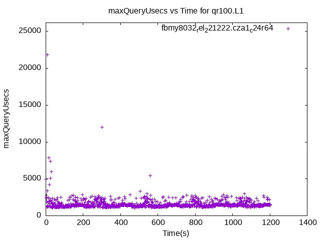fbmy8032_rel_221222.cza1_c24r64
fbmy8032_rel_221222.cza1ps0_c24r64: IPS
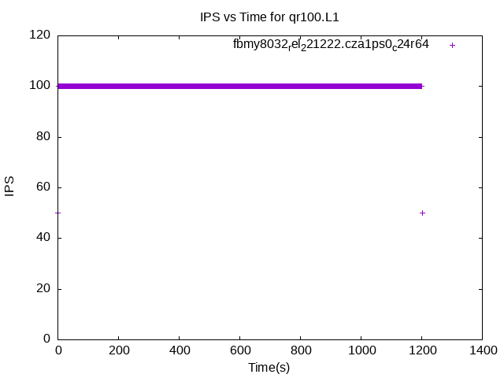fbmy8032_rel_221222.cza1ps0_c24r64
fbmy8032_rel_221222.cza1ps0_c24r64: max insert response time
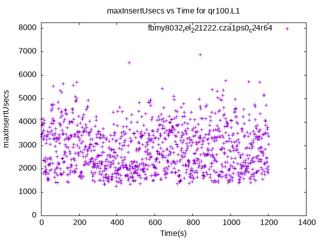fbmy8032_rel_221222.cza1ps0_c24r64
fbmy8032_rel_221222.cza1ps0_c24r64: DPS
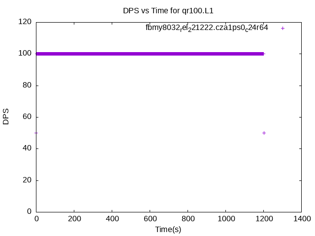fbmy8032_rel_221222.cza1ps0_c24r64
fbmy8032_rel_221222.cza1ps0_c24r64: max delete response time
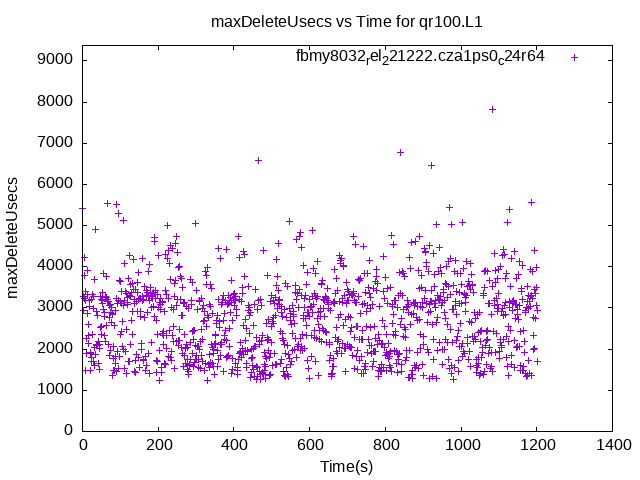fbmy8032_rel_221222.cza1ps0_c24r64
fbmy8032_rel_221222.cza1ps0_c24r64: QPS
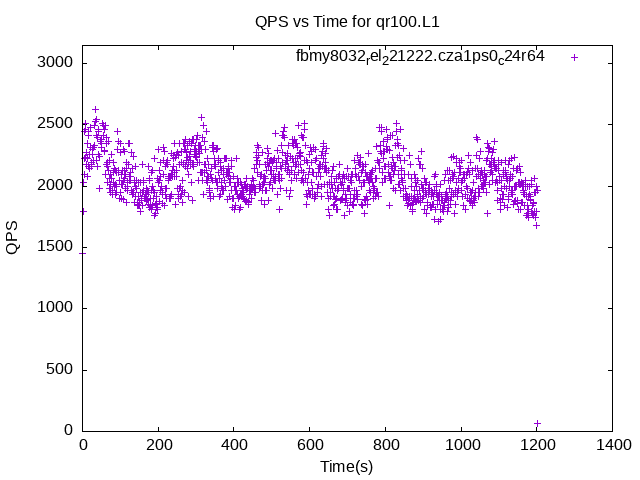fbmy8032_rel_221222.cza1ps0_c24r64
fbmy8032_rel_221222.cza1ps0_c24r64: max query response time
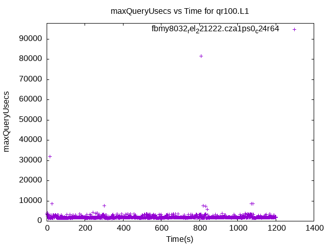fbmy8032_rel_221222.cza1ps0_c24r64